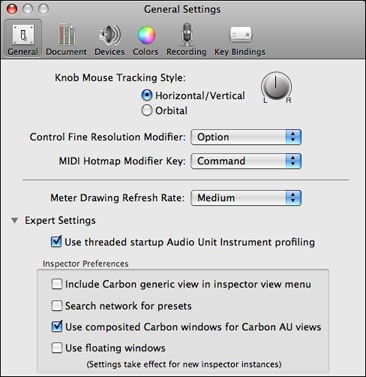
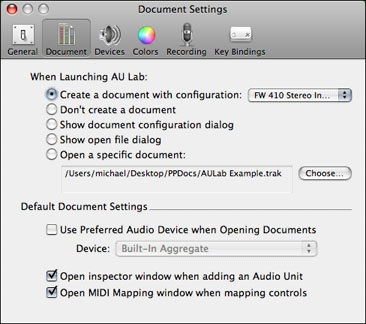
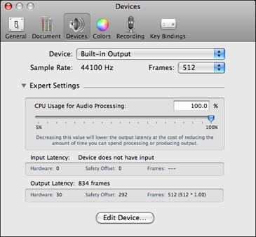
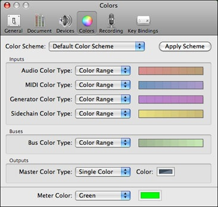
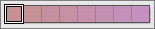
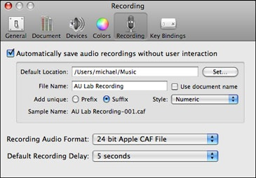
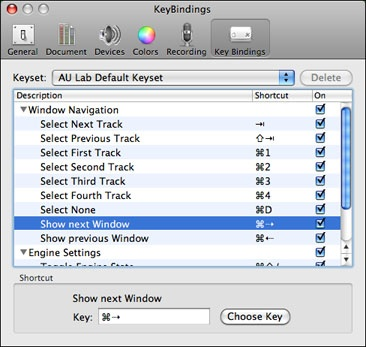

Summary: This section describes AU Lab’s preferences and each of the for preference panes in detail including general settings, document settings, color defaults, recording options, and key bindings.
AU Lab has several preferences for customizing its behavior. To open the preferences dialog, choose Preferences… from the AU Lab menu. There are three tabs in the preferences dialog grouping different areas of application functionality.
The general settings section of the Preferences dialog contains settings for controlling document and track behavior. The first section specifies the behavior for panners.
There are two panning style types:
Horizontal/Vertical: Moving the mouse right increases the pan, and moving the mouse left decreases the pan.
Orbital: Moving the mouse in a circle clockwise increases the pan. Counter-clockwise decreases the pan.
The second section specifies key modifiers that change the behavior of the controls in AU Lab.
The Control Fine Resolution Modifier popup menu allows you to specify the modifier key that is used to enter fine resolution mode. When manipulating a continuous control such as a panner with this key down, the control will track more slowly and with increased resolution. You may see this effect with the sample panner to the right of the Knob Mouse Tracking Style radio button group. The default fine resolution modifier is the Option key.
The MIDI Hotmap Modifier Key popup menu allows you to specify the key that is used to begin a MIDI Hotmap gesture. For more information about MIDI Hot mapping, please see Control MIDI Mapping. The default Hotmap modifier is the Command Key.
The Expert Settings are contained in a collapsible section. These settings are intended to be used by Audio Unit developers or some advanced users.
Use threaded startup Audio Unit Instrument profiling: When this setting is enabled, AU Lab will launch a separate thread on startup to open Audio Unit Instruments and determine their capabilities. This feature is primarily aimed at developers to help test if their Audio Unit can be opened on a thread other than the main thread. If this option is unchecked, Audio Unit instruments will be profiled the first time an instrument is added to the document. This option is on by default.
Include Carbon generic view in inspector view menu: When this setting is enabled, the AU Inspector will show an additional menu item "Carbon Generic View" in its view menu. Without this menu item, the AU Inspector will only display the Cocoa-based "Generic View". This option is off by default.
Search network for presets: This setting is useful if you are working on a laptop or machine that is not always connected to a network. If this button is checked, the Inspector will look for Audio Unit presets, Thru Parameter presets, and strips on the local network. If you are not connected to a local network, unchecking this button will stop AU Lab from searching for information on the network. This option is off by default.
Use composited Carbon windows for Carbon AU views: When this setting is enabled, Audio Units with custom views will have their views displayed in a composited carbon inspector window. As some third-party audio units have incompatibility issues with window compositing, this option is off by default.
The inspector window for an audio units with a custom view will display an icon next to the view indicating the type of window that is hosting the view. Cocoa windows and Carbon windows with compositing on will display a blue icon while Carbon windows that are not composited will display a gray icon.
Cocoa and Carbon Composited Windows |
Carbon (non-Composited) Windows |
Use floating windows: When this setting is enabled, inspector windows will be created as floating.

There are five settings that modify the open document behavior:
Create a document with configuration: When this preference is selected, AU Lab will automatically create a document based on a specific saved configuration (created in the Document Creation Assistant). To specify the configuration, select the saved configuration from the configuration popup menu.
Don’t create a document: When this preference is selected AU Lab will not create a document when it is launched. To create a new document choose New from the File menu.
Show Document Configuration Dialog: With this setting, AU Lab will present a the Document Configuration Dialog, allowing the user to set the device and track configuration that will be used for the new document.
Show open file dialog: With this setting, when AU Lab is launched it will present the standard open file dialog.
Open a specific document: With this setting, AU Lab will open a specific saved document on launch. To specify the document to open, click the Choose… button and specify a document in the file dialog.
Use Preferred Audio Device when Opening Documents. This setting allows the user to specify a preferred audio device. This device will be the default device that all new documents will be created with. In addition, opening a document that was created on a device other than the preferred device will be mapped to the preferred device. If this option is not enabled, documents will be created on the default output device and devices will open on the device specified in the document file.
If this checkbox is enabled, the user may specify the preferred device and number of frames. This setting is disabled by default.
Open Inspector window when adding an Audio Unit. This option specifies whether the inspector window should be opened every time an audio unit effect is added to a track. Unchecking this option will prevent the inspector from opening automatically. You can always manually open the inspector window by clicking on the name of an effect in the Effects section of a track. This preference is on by default.
Open MIDI Mapping window when mapping controls. When this preference is enabled, the MIDI Mapping window will be opened for the document when any new MIDI mapping is made for a control. See MIDI Mapping for more information. This preference is on by default.
The device preferences panel provides browsing and configuration facilities for all of the audio devices available on the system. The basic panel provides a popup menu for selecting the device to inspect and a popup menu for changing the sample rate and number of frames of the device.
Note that this panel is a browser and does not change the device associated with any open documents. If, however, the sample rate or frames are modified for a specific device, any open documents associated with that device will use these new settings.
Additionally, the device preferences panel provides additional facilities for managing device latency. To access these settings, click on the Expert Settings disclosure triangle.
The expert settings section has a control for adjusting the CPU Usage property. By changing the CPU usage, you can adjust the output latency of any documents that are using that device by reducing the time you have to do work. Reducing this latency comes at a cost; an audio overload will be triggered if the audio processing cannot be completed in the amount of time specified. To avoid these overloads, reduce the demands on the audio engine by reducing document complexity:
The color preferences panel allows the user to specify default colors for the various group types. To access the color preferences, click on the Colors tab of the Preferences Dialog.
You may choose a preset color scheme or create your own using the Color Scheme popup button.
The panel contains a section for each of the group types: Inputs, Buses, and Outputs. Within each section is an entry for each appropriate group type. The entry contains a popup menu for the type of color (Color Range or Solid Color) and a control for editing the color.
To edit a color range, click on either the first color in the ramp or the last color and then double-click to show the color picker.

To edit a solid color, click in the color well to show the color picker.
You may also change colors by dragging colors from ranges, or color wells to other color controls.
Once all of the colors have been chosen, click the Apply Color Scheme button to apply the settings to all open documents and save the preferred colors.
All tracks will use these specified colors except for those groups where the color has been manually overridden in one of the track editor sheets.
The meter color is a global color preference and is not saved as part of the current color scheme. This allows you to specify the color of the meters used in AU Lab.
The recording preferences for AU Lab can be configured in the Recording tab of the Preferences Dialog.
The first preference enables auto-saving:
Automatically save audio recordings without user interaction: If this option is checked, you will not be prompted to save the recording when you press the recording button in a master track. The file will be automatically recorded based on the settings of the dialog.
Default Location: This location specifies where audio files will be saved. You can edit this location by typing in the text field, or press Set… to browse for the directory.
File name: The base file name to use for the recording file. If Use document name is checked, the base file name will be the name of the document you are recording from.
Add unique: This option specifies whether to use a unique prefix or suffix to generate the name of the file. If you choose prefix, a unique identifier will be placed at the beginning of the file name. If you choose suffix, a unique identifier will be placed at the end of the file name.
Style: Specifies the type of the suffix or prefix to add to the base file name. There are several different styles:
You can preview the file name by looking at the Sample name: text string.
The remainder of the dialog allows you to specify the audio file format and the recording delay.
Recording Audio Format: This popup menu allows you to specify the audio file format that will be used for the recording.
Default Recording Delay: This option allows you to specify a recording delay. This time interval is the delay between when the record button in an output track is pressed and recording starts. The status area at the bottom of the window will count down until recording starts.
Time delays are useful if you have some equipment to prepare before recording starts, or if you have multiple output tracks and want to enable recording for those tracks as well.
The Key Bindings preferences allow you to specify shortcut keys for special operations such as toggling the engine state, or performing track selection.
To change a key binding, select the command and press the Choose Key button to select a new mapping for the command.